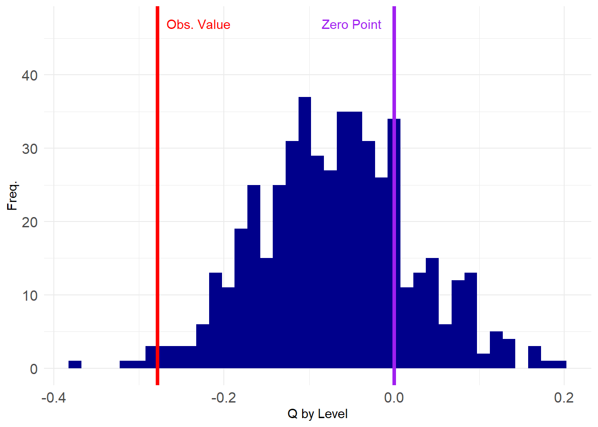
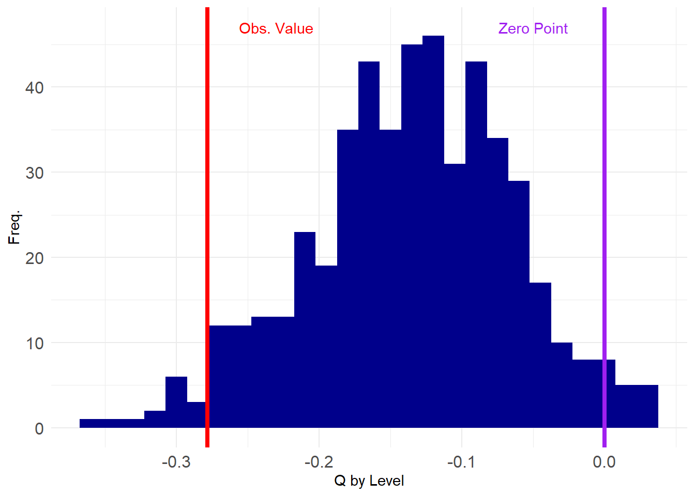

Graph Ensembles in Two-Mode Networks
As we saw in the graph ensemble lesson, there are many approaches to randomizing the structure of one-mode networks when the aim is to create graph ensembles preserving selected properties. These ensembles, in turn, can be used to do null hypothesis testing in networks.
Not surprisingly, a similar suite of techniques exist for the two-mode case, but until recently various approaches were scattered (and reduplicated) across a bunch of literatures in social network analysis, ecology, network physics, and computer science (Neal et al. 2024).
Two-Mode Erdos-Renyi Model
Like with one-mode networks, the simplest null model for two-mode networks is one that preserves the number of nodes and the number of edges. This model, like we saw before, also preserves anything that is a function of these two-quantities. In the two-mode case, this is the bipartite graph’s density and the average degrees of the nodes in each mode (recall that two-mode networks have two average degrees). This is thus a two-mode version of the Erdos-Renyi null model.
Let’s load up the Southern Women (SW) data and see how it works:
Let’s compute some basic network statistics:
d <- sum(A)/(nrow(A)*ncol(A)) #density
ad.p <- mean(rowSums(A)) #average degree of people
ad.g <- mean(colSums(A)) #average degree of groups
d[1] 0.3531746[1] 4.944444[1] 6.357143We can see that the density of the SW network is \(d=\) 0.35, the average degree of people \(\bar{k_p}=\) 4.94 and the average degree of groups \(\bar{k_g}=\) 6.36.
Now, let’s compute something on this network, like the degree correlation between people and groups, answering the question: Do people with lots of memberships tend to join larger groups?
First let’s create an edge list data frame with the incident nodes’ degrees and compute the correlation between the respective degrees:
v.a <- as.vector(A) #adjacency relations
rd <- rep(rowSums(A), ncol(A)) #row degrees
cd <- rep(colSums(A), each = nrow(A)) #column degrees
d <- data.frame(e = v.a, rd = rd, cd = cd)
cor(d[d$e == 1, ]$rd, d[d$e == 1, ]$cd) #degree correlation among adjacent nodes[1] -0.2783186Which is negative, suggesting degree anti-correlation in this network (people with lots of memberships tend to belong to smaller groups).
Is this value statistically significant net of the network density? To find out, we need to create a two-mode graph ensemble of networks with the same density, number of persons, and number of groups as SW.
A simple approach goes like this: first, let’s create a vectorized version of the adjacency matrix:
[1] 1 1 0 1 0 0 0 0 0 0 0 0 0 0 0 0 0 0 1 1 1 0 0 0 0 0 0 0 0 0 0 0 0 0 0 0 1
[38] 1 1 1 1 1 0 0 0 0 0 0 0 0 0 0 0 0 1 0 1 1 1 0 0 0 0 0 0 0 0 0 0 0 0 0 1 1
[75] 1 1 1 1 1 0 1 0 0 0 0 0 0 0 0 0 1 1 1 1 0 1 1 1 0 0 0 0 0 1 0 0 0 0 0 1 1
[112] 1 1 0 1 0 1 1 0 0 1 1 1 0 0 0 1 1 1 1 0 1 1 1 1 1 1 1 1 0 1 1 0 0 1 0 1 0
[149] 0 0 0 1 1 1 1 1 1 1 0 1 1 1 0 0 0 0 0 0 0 0 0 0 1 1 1 1 1 0 0 0 0 0 0 0 0
[186] 0 0 0 0 0 0 0 0 1 1 0 1 1 0 0 0 0 0 0 0 0 0 1 1 1 1 1 1 0 0 0 0 0 0 0 0 0
[223] 0 0 0 0 0 1 1 1 0 0 0 0 0 0 0 0 0 0 0 0 0 0 0 1 1 1 0 0 0 0These are the biadjacency matrix entries stretched out into a long vector of length equals to the number of rows multiplied by the number of columns of the matrix.
Then we just reshuffle the values of this vector by sampling vector positions:
Now we can just generate a new biadjacency matrix A.perm from the reshuffled vector v.shuff:
A.perm <- matrix(v.shuff, nrow = nrow(A)) #creating permuted biadjacency matrix
rownames(A.perm) <- rownames(A)
colnames(A.perm) <- colnames(A)
A.perm 6/27 3/2 4/12 9/26 2/25 5/19 3/15 9/16 4/8 6/10 2/23 4/7 11/21 8/3
EVELYN 1 1 1 0 1 0 1 0 1 1 1 0 0 1
LAURA 0 0 0 1 1 0 1 0 0 1 0 1 0 1
THERESA 1 0 0 1 1 0 0 1 0 0 1 0 0 0
BRENDA 0 0 0 0 1 1 1 0 1 0 0 0 1 0
CHARLOTTE 1 0 0 0 0 0 1 0 0 0 0 0 0 0
FRANCES 0 1 0 0 1 0 0 0 1 1 0 0 0 0
ELEANOR 1 0 0 0 1 1 1 0 1 0 0 0 0 1
PEARL 0 1 0 1 1 0 0 0 0 0 0 1 0 0
RUTH 0 0 0 0 1 0 1 1 0 0 0 1 1 0
VERNE 0 1 0 1 0 0 0 0 1 0 0 0 1 0
MYRNA 1 1 0 0 0 0 0 0 0 0 0 1 0 0
KATHERINE 0 1 1 0 0 0 0 1 0 1 1 1 0 1
SYLVIA 1 1 0 1 0 1 0 0 0 0 0 0 0 1
NORA 0 0 1 1 1 0 1 1 0 0 0 1 0 0
HELEN 0 0 1 1 0 0 0 0 0 1 0 1 1 0
DOROTHY 1 0 0 0 0 0 1 1 0 0 0 0 0 0
OLIVIA 0 1 0 0 0 1 0 0 0 0 1 1 0 1
FLORA 1 0 1 0 1 0 0 0 0 1 1 0 0 0We can verify that A.perm has the same basic network statistics as A:
d <- sum(A.perm)/(nrow(A.perm)*ncol(A.perm)) #density
ad.p <- mean(rowSums(A.perm)) #average degree of people
ad.g <- mean(colSums(A.perm)) #average degree of groups
d[1] 0.3531746[1] 4.944444[1] 6.357143But not the same degree distributions:
EVELYN LAURA THERESA BRENDA CHARLOTTE FRANCES ELEANOR PEARL
8 7 8 7 4 4 4 3
RUTH VERNE MYRNA KATHERINE SYLVIA NORA HELEN DOROTHY
4 4 4 6 7 8 5 2
OLIVIA FLORA
2 2 EVELYN LAURA THERESA BRENDA CHARLOTTE FRANCES ELEANOR PEARL
9 6 5 5 2 4 6 4
RUTH VERNE MYRNA KATHERINE SYLVIA NORA HELEN DOROTHY
5 4 3 7 5 6 5 3
OLIVIA FLORA
5 5 6/27 3/2 4/12 9/26 2/25 5/19 3/15 9/16 4/8 6/10 2/23 4/7 11/21
3 3 6 4 8 8 10 14 12 5 4 6 3
8/3
3 6/27 3/2 4/12 9/26 2/25 5/19 3/15 9/16 4/8 6/10 2/23 4/7 11/21
8 8 5 7 10 4 8 5 5 6 5 8 4
8/3
6 We can now package the two-mode permutation steps into a function called tm.perm:
And generate an Erdos-Renyi graph ensemble for the SW data:
We then package the steps above into a two-mode degree correlation function:
And compute it across our ensemble:
[1] -0.181068203 -0.028314100 0.188798665 -0.164612262 -0.046365539
[6] -0.117754101 -0.111534437 0.031349320 -0.166265165 -0.109026429
[11] -0.063007761 0.035804196 -0.093016920 -0.008386071 -0.116197236
[16] -0.120114305 -0.127791616 -0.051316368 -0.179359174 -0.169231258
[21] -0.072542931 -0.109965295 -0.077388567 -0.086158870 -0.070277167
[26] -0.040457937 -0.191663455 -0.051744760 0.017962735 -0.062511337
[31] -0.140546077 -0.180194592 -0.074843653 -0.015082985 -0.130821828
[36] -0.040472998 0.059572901 -0.085852479 0.025473457 -0.023345432
[41] -0.075236000 -0.085682500 -0.043660481 0.057020861 -0.079154999
[46] 0.113252420 -0.133612519 -0.108477373 -0.081678899 0.084910633
[51] 0.098588342 -0.112577719 -0.040747607 0.095056504 0.051027047
[56] 0.002563878 -0.038096975 -0.080671796 -0.062014599 -0.064015988
[61] 0.061467130 0.015000308 -0.063111868 -0.139627092 0.023332867
[66] -0.027933756 -0.036593341 -0.049240244 -0.130301946 0.040592725
[71] -0.136314003 -0.051252491 0.038112132 0.001781197 0.049331912
[76] -0.082950723 -0.120608238 -0.085908704 0.073822120 -0.058662697
[81] -0.088400011 -0.127457896 0.042472937 -0.094378753 -0.025708298
[86] 0.040868238 -0.108797377 -0.089105995 -0.127387349 0.007556992
[91] -0.029442970 0.120221999 -0.157639066 -0.107269116 -0.061072459
[96] -0.130828870 -0.157198707 -0.093604225 -0.187877666 0.097223042So let’s see how our observed value stacks up in the grand scheme:
library(ggplot2)
p <- ggplot(data = data.frame(round(corrs, 2)), aes(x = corrs))
p <- p + geom_histogram(binwidth = 0.015, stat = "bin", fill = "darkblue")
p <- p + geom_vline(xintercept = tm.deg.corr(A),
color = "red", linetype = 1, linewidth = 1.5)
p <- p + geom_vline(xintercept = 0, linetype = 1,
color = "purple", linewidth = 1.5)
p <- p + theme_minimal() + labs(x = "Q by Level", y = "Freq.")
p <- p + theme(axis.text = element_text(size = 12))
p <- p + annotate("text", x=-0.05, y=47, label= "Zero Point", color = "purple")
p <- p + annotate("text", x=-0.23, y=47, label= "Obs. Value", color = "red")
p
Which looks close to the tail end of the negative spectrum. We can compute the value that corresponds to the 1st percentile of the assortativity distribution from the ensemble and then see if what observe is below that value (\(p < 0.01\)).
Which is definitely true in this null graph ensemble, suggesting that degree anti-correlation is present in the SW data, at statistically significant levels, net of density.
As before, if we wanted a more stringent two-tailed we would need to create a vector with the absolute value of the two-mode degree correlation:
Which is still statistically significant at conventional levels.
Fixed Degree Models
As we already noted, the two-mode Erdos-Renyi model fixes the number of edges (and thus the density and average degrees) in the network, but does not preserve the original degree distributions. We might want to test our hypotheses by using a two-mode graph ensemble that “controls for” the node degrees.
How do we do that? One complication is that we have two sets of degrees so we have more options than in the one mode case. We can fix the row (person) degree, or the column (group) degree or both degrees.
Let’s begin with the simplest case, in which we fix either the row or column degree but not both.
Fixing Row Degrees
To fix the row degrees, we need to randomize the entries in each row of the biadjacency matrix, while preserving the number of ones in that row. One way to do this is to write a function that takes an observed row of the matrix, randomizes it and then substitutes it for the observed row:
Now we can just apply the rand.row function to each row of the biadjacency matrix A to generate a new matrix A.r:
Here’s the original matrix A:
6/27 3/2 4/12 9/26 2/25 5/19 3/15 9/16 4/8 6/10 2/23 4/7 11/21 8/3
EVELYN 1 1 1 1 1 1 0 1 1 0 0 0 0 0
LAURA 1 1 1 0 1 1 1 1 0 0 0 0 0 0
THERESA 0 1 1 1 1 1 1 1 1 0 0 0 0 0
BRENDA 1 0 1 1 1 1 1 1 0 0 0 0 0 0
CHARLOTTE 0 0 1 1 1 0 1 0 0 0 0 0 0 0
FRANCES 0 0 1 0 1 1 0 1 0 0 0 0 0 0
ELEANOR 0 0 0 0 1 1 1 1 0 0 0 0 0 0
PEARL 0 0 0 0 0 1 0 1 1 0 0 0 0 0
RUTH 0 0 0 0 1 0 1 1 1 0 0 0 0 0
VERNE 0 0 0 0 0 0 1 1 1 0 0 1 0 0
MYRNA 0 0 0 0 0 0 0 1 1 1 0 1 0 0
KATHERINE 0 0 0 0 0 0 0 1 1 1 0 1 1 1
SYLVIA 0 0 0 0 0 0 1 1 1 1 0 1 1 1
NORA 0 0 0 0 0 1 1 0 1 1 1 1 1 1
HELEN 0 0 0 0 0 0 1 1 0 1 1 1 0 0
DOROTHY 0 0 0 0 0 0 0 1 1 0 0 0 0 0
OLIVIA 0 0 0 0 0 0 0 0 1 0 1 0 0 0
FLORA 0 0 0 0 0 0 0 0 1 0 1 0 0 0And the reshuffled matrix A.r
6/27 3/2 4/12 9/26 2/25 5/19 3/15 9/16 4/8 6/10 2/23 4/7 11/21 8/3
EVELYN 1 0 0 1 0 1 1 1 1 0 1 0 0 1
LAURA 0 0 1 1 1 0 0 0 1 0 1 1 0 1
THERESA 1 0 1 0 0 1 0 1 1 0 1 1 0 1
BRENDA 0 1 1 0 1 0 1 0 0 1 0 0 1 1
CHARLOTTE 0 0 1 0 0 0 0 0 1 1 1 0 0 0
FRANCES 0 1 0 1 0 0 1 1 0 0 0 0 0 0
ELEANOR 0 0 0 0 0 0 1 0 0 1 1 0 0 1
PEARL 0 0 0 0 1 0 0 0 1 1 0 0 0 0
RUTH 0 0 0 0 0 1 0 1 0 1 0 0 0 1
VERNE 0 0 0 0 1 1 0 1 0 0 0 0 1 0
MYRNA 1 1 0 0 0 0 1 1 0 0 0 0 0 0
KATHERINE 0 1 1 0 0 1 0 0 0 0 1 0 1 1
SYLVIA 1 0 0 0 1 0 0 1 1 1 1 0 0 1
NORA 1 1 0 1 1 1 0 1 0 1 0 0 1 0
HELEN 0 0 1 0 1 1 0 0 0 1 0 0 0 1
DOROTHY 1 0 0 0 0 0 0 0 0 1 0 0 0 0
OLIVIA 0 1 0 0 0 0 0 0 0 1 0 0 0 0
FLORA 0 0 0 0 0 0 0 0 0 0 0 1 0 1Note that the new matrix A.r preserves the person degrees of the original:
EVELYN LAURA THERESA BRENDA CHARLOTTE FRANCES ELEANOR PEARL
8 7 8 7 4 4 4 3
RUTH VERNE MYRNA KATHERINE SYLVIA NORA HELEN DOROTHY
4 4 4 6 7 8 5 2
OLIVIA FLORA
2 2 EVELYN LAURA THERESA BRENDA CHARLOTTE FRANCES ELEANOR PEARL
8 7 8 7 4 4 4 3
RUTH VERNE MYRNA KATHERINE SYLVIA NORA HELEN DOROTHY
4 4 4 6 7 8 5 2
OLIVIA FLORA
2 2 But not the group degrees, because each person’s memberships are randomly distributed across groups:
6/27 3/2 4/12 9/26 2/25 5/19 3/15 9/16 4/8 6/10 2/23 4/7 11/21
3 3 6 4 8 8 10 14 12 5 4 6 3
8/3
3 6/27 3/2 4/12 9/26 2/25 5/19 3/15 9/16 4/8 6/10 2/23 4/7 11/21
6 6 6 4 7 7 5 8 6 10 7 3 4
8/3
10 All the other lower order statistics like density are preserved:
Now we package everything into a function:
And generate a graph ensemble of reshuffled matrices that preserve the person degrees:
Let’s compute the degree correlations across this ensemble and see how our observed value stacks up in the grand scheme:
corrs <- sapply(G, tm.deg.corr)
library(ggplot2)
p <- ggplot(data = data.frame(round(corrs, 2)), aes(x = corrs))
p <- p + geom_histogram(binwidth = 0.015, stat = "bin", fill = "darkblue")
p <- p + geom_vline(xintercept = tm.deg.corr(A),
color = "red", linetype = 1, linewidth = 1.5)
p <- p + geom_vline(xintercept = 0, linetype = 1,
color = "purple", linewidth = 1.5)
p <- p + theme_minimal() + labs(x = "Q by Level", y = "Freq.")
p <- p + theme(axis.text = element_text(size = 12))
p <- p + annotate("text", x=-0.05, y=47, label= "Zero Point", color = "purple")
p <- p + annotate("text", x=-0.23, y=47, label= "Obs. Value", color = "red")
p
Looking pretty good! Let’s check the p-value:
1%
-0.2869344 1%
FALSE [1] 0.012Note that our result is not longer statistically significant at the \(p <0.01\) level, but it can be defended at the \(p < 0.05\) level. Still a chance of getting published.
Fixing Column Degrees
We can fix the column degrees using the same fix.deg function as earlier, but this time, we just change the mode argument to equal 2, to apply the function to the columns and not the rows of the matrix A.
For instance:
6/27 3/2 4/12 9/26 2/25 5/19 3/15 9/16 4/8 6/10 2/23 4/7 11/21 8/3
EVELYN 0 1 0 1 1 1 1 0 1 0 1 1 0 0
LAURA 0 0 1 0 0 0 1 1 1 0 0 0 0 0
THERESA 0 1 0 1 1 0 0 1 1 1 0 0 0 0
BRENDA 0 0 1 0 0 1 0 1 0 0 1 1 1 0
CHARLOTTE 0 0 0 0 0 1 0 1 1 0 0 0 0 0
FRANCES 0 1 0 0 1 0 1 1 1 1 0 0 1 0
ELEANOR 0 0 0 0 0 0 1 0 0 1 1 0 0 0
PEARL 0 0 0 0 0 0 0 0 1 1 0 0 0 0
RUTH 0 0 0 0 1 0 0 1 1 0 0 0 0 0
VERNE 1 0 1 0 1 1 1 1 1 0 0 1 0 1
MYRNA 0 0 1 0 1 1 1 1 0 0 0 0 0 0
KATHERINE 1 0 0 1 0 0 1 1 1 0 0 1 1 0
SYLVIA 0 0 0 0 1 0 1 1 1 1 0 0 0 0
NORA 1 0 1 0 1 0 1 1 0 0 0 0 0 0
HELEN 0 0 0 0 0 1 0 1 1 0 0 1 0 1
DOROTHY 0 0 0 0 0 1 0 0 0 0 1 0 0 0
OLIVIA 0 0 0 0 0 1 1 1 1 0 0 0 0 0
FLORA 0 0 1 1 0 0 0 1 0 0 0 1 0 1Which generates a reshuffled adjacency matrix that preserves the group degrees:
6/27 3/2 4/12 9/26 2/25 5/19 3/15 9/16 4/8 6/10 2/23 4/7 11/21
3 3 6 4 8 8 10 14 12 5 4 6 3
8/3
3 6/27 3/2 4/12 9/26 2/25 5/19 3/15 9/16 4/8 6/10 2/23 4/7 11/21
3 3 6 4 8 8 10 14 12 5 4 6 3
8/3
3 And now we test our hypothesis that there is degree anti-correlation in the SW data on an ensemble of graphs with fixed group degrees:
set.seed(4567)
G <- replicate(500, fix.deg(A, mode = 2), simplify = FALSE)
corrs <- sapply(G, tm.deg.corr)
library(ggplot2)
p <- ggplot(data = data.frame(round(corrs, 2)), aes(x = corrs))
p <- p + geom_histogram(binwidth = 0.015, stat = "bin", fill = "darkblue")
p <- p + geom_vline(xintercept = tm.deg.corr(A),
color = "red", linetype = 1, linewidth = 1.5)
p <- p + geom_vline(xintercept = 0, linetype = 1,
color = "purple", linewidth = 1.5)
p <- p + theme_minimal() + labs(x = "Q by Level", y = "Freq.")
p <- p + theme(axis.text = element_text(size = 12))
p <- p + annotate("text", x=-0.05, y=47, label= "Zero Point", color = "purple")
p <- p + annotate("text", x=-0.23, y=47, label= "Obs. Value", color = "red")
p
Uh oh, adjusting for group degrees seems to have made our conclusions a bit more shaky. Let’ see:
1%
-0.3039788 1%
FALSE [1] 0.028Still significant at \(p < 0.05\)!
Regardless, it is clear that our earlier conclusions from the Erdos-Renyi model were a bit too optimistic. What happens when we try to fix both the row and column degrees?